import matplotlib.pyplot as plt
import numpy as np
import pandas as pd
import matplotlib
from mpl_toolkits import mplot3d
from math import sqrt
SPINE_COLOR = 'gray'
import numpy as np
import matplotlib.pyplot as plt
plt.get_cmap('gnuplot2')
%matplotlib inline
# Based on: https://www.analyticsvidhya.com/blog/2016/01/complete-tutorial-ridge-lasso-regression-python/#Define input array with angles from 60deg to 300deg converted to radians
x = np.array([i*np.pi/180 for i in range(60,300,4)])
np.random.seed(10) #Setting seed for reproducability
y = 4*x + 7 + np.random.normal(0,3,len(x))
y_true = 4*x + 7
max_deg = 20
data_x = [x**(i+1) for i in range(max_deg)] + [y]
data_c = ['x'] + ['x_{}'.format(i+1) for i in range(1,max_deg)] + ['y']
data = pd.DataFrame(np.column_stack(data_x),columns=data_c)
data["ones"] = 1
plt.plot(data['x'],data['y'],'.', label='Data Points')
plt.plot(data['x'], y_true,'g', label='True Function')
plt.xlabel("x")
plt.ylabel("y")
plt.legend()
plt.savefig('true_function.pdf', transparent=True, bbox_inches="tight")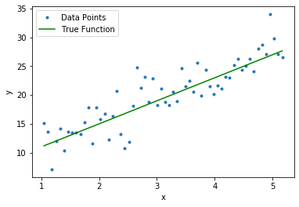
def cost(theta_0, theta_1, x, y):
s = 0
for i in range(len(x)):
y_i_hat = x[i]*theta_1 + theta_0
s += (y[i]-y_i_hat)**2
return s/len(x)
x_grid, y_grid = np.mgrid[-4:15:.2, -4:15:.2]
cost_matrix = np.zeros_like(x_grid)
for i in range(x_grid.shape[0]):
for j in range(x_grid.shape[1]):
cost_matrix[i, j] = cost(x_grid[i, j], y_grid[i, j], data['x'], data['y'])def cost_lasso(theta_0, theta_1, x, y, lamb):
s = 0
for i in range(len(x)):
y_i_hat = x[i]*theta_1 + theta_0
s += (y[i]-y_i_hat)**2 + lamb*(abs(theta_0) + abs(theta_1))
return s/len(x)
x_grid, y_grid = np.mgrid[-4:15:.2, -4:15:.2]
#lambda = 1000 cost curve tends to lasso objective.
fig = plt.figure(figsize=(7,7))
lamb_list = [10,100,1000]
for lamb in lamb_list:
lasso_cost_matrix = np.zeros_like(x_grid)
for i in range(x_grid.shape[0]):
for j in range(x_grid.shape[1]):
lasso_cost_matrix[i, j] = cost_lasso(x_grid[i, j], y_grid[i, j], data['x'], data['y'],lamb)
ax = plt.axes(projection='3d')
ax.plot_surface(x_grid, y_grid, lasso_cost_matrix,cmap='viridis', edgecolor='none')
ax.set_title('Least squares objective function');
ax.set_xlabel(r"$\theta_0$")
ax.set_ylabel(r"$\theta_1$")
ax.set_xlim([-4,15])
ax.set_ylim([-4,15])
u = np.linspace(0, np.pi, 30)
v = np.linspace(0, 2 * np.pi, 30)
# x = np.outer(500*np.sin(u), np.sin(v))
# y = np.outer(500*np.sin(u), np.cos(v))
# z = np.outer(500*np.cos(u), np.ones_like(v))
# ax.plot_wireframe(x, y, z)
ax.view_init(45, 120)
plt.savefig('lasso_lamb_{}_surface.pdf'.format(lamb), transparent=True, bbox_inches="tight")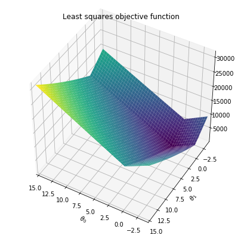
def yy(p,soln):
xx = np.linspace(-soln,soln,100)
xx_final = []
yy_final = []
for x in xx:
if(x>0):
xx_final.append(x)
xx_final.append(x)
y = (soln**p - x**p)**(1.0/p)
yy_final.append(y)
yy_final.append(-y)
else:
xx_final.append(x)
xx_final.append(x)
y = (soln**p - (-x)**p)**(1.0/p)
yy_final.append(y)
yy_final.append(-y)
return xx_final, yy_finalfig,ax = plt.subplots()
ax.fill(xx_final,yy_final)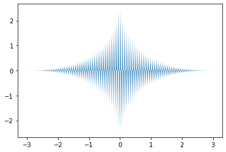
from matplotlib.patches import Rectangle
soln = 3
p = 0.5
levels = np.sort(np.array([2,10,20,50,100,150,200,400,600,800,1000]))
fig,ax = plt.subplots()
plt.contourf(x_grid, y_grid, cost_matrix, levels,alpha=.7)
plt.colorbar()
plt.axhline(0, color='black', alpha=.5, dashes=[2, 4],linewidth=1)
plt.axvline(0, color='black', alpha=0.5, dashes=[2, 4],linewidth=1)
xx = np.linspace(-soln,soln,100)
y1 = yy1(xx,soln,p)
y2 = yy2(xx,soln,p)
x_final = np.hstack((xx,xx))
y_final = np.hstack((y1,y2))
xx_final, yy_final = yy(p,soln)
plt.fill(xx_final,yy_final)
CS = plt.contour(x_grid, y_grid, cost_matrix, levels, linewidths=1,colors='black')
plt.clabel(CS, inline=1, fontsize=8)
plt.title("Least squares objective function")
plt.xlabel(r"$\theta_0$")
plt.ylabel(r"$\theta_1$")
p1 = Rectangle((-soln, 0), np.sqrt(2)*soln,np.sqrt(2)*soln, angle = '-45', color='g', label=r'$|\theta_0|+|\theta_1|=3$')
plt.scatter([7], [4],marker='*', color='r',s=25,label='Actual Solution')
plt.gca().add_patch(p1)
plt.legend()
plt.gca().set_aspect('equal')
plt.savefig('lasso_base_contour.pdf', transparent=True, bbox_inches="tight")
plt.show()
/home/btech2/miniconda3/envs/latex_slides/lib/python3.6/site-packages/ipykernel_launcher.py:7: RuntimeWarning: invalid value encountered in double_scalars
import sys
/home/btech2/miniconda3/envs/latex_slides/lib/python3.6/site-packages/ipykernel_launcher.py:5: RuntimeWarning: invalid value encountered in double_scalars
"""
from matplotlib.patches import Rectangle
levels = np.sort(np.array([2,10,20,50,100,150,200,400,600,800,1000]))
fig,ax = plt.subplots()
plt.contourf(x_grid, y_grid, cost_matrix, levels,alpha=.7)
plt.colorbar()
plt.axhline(0, color='black', alpha=.5, dashes=[2, 4],linewidth=1)
plt.axvline(0, color='black', alpha=0.5, dashes=[2, 4],linewidth=1)
plt.scatter(xx, y1, s=0.1,color='k',)
plt.scatter(xx, y2, s=0.1,color='k',)
CS = plt.contour(x_grid, y_grid, cost_matrix, levels, linewidths=1,colors='black')
plt.clabel(CS, inline=1, fontsize=8)
plt.title("Least squares objective function")
plt.xlabel(r"$\theta_0$")
plt.ylabel(r"$\theta_1$")
p1 = Rectangle((-soln, 0), np.sqrt(2)*soln,np.sqrt(2)*soln, angle = '-45', color='g', label=r'$|\theta_0|+|\theta_1|=3$')
plt.scatter([7], [4],marker='*', color='r',s=25,label='Actual Solution')
plt.gca().add_patch(p1)
plt.legend()
plt.gca().set_aspect('equal')
plt.savefig('lasso_base_contour.pdf', transparent=True, bbox_inches="tight")
plt.show()
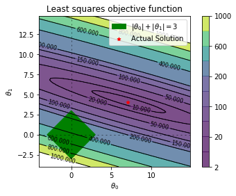
regressor.coef_[0] + regressor.coef_[1]5.74196012460497## Function generator.
iterations = 60
p = 4
q = 4
alpha = 0.1
x = np.linspace(-5,5,1000)
y1 = x**2
y2 = abs(x)
for i in range(iterations):
fig,ax = plt.subplots(1,2)
ax[0].plot(x,y1)
ax[1].plot(x,y2)
prev = p
qrev = q
p = p - 2*alpha*p
q = q - alpha
val = p
ax[0].arrow(prev,prev**2,p-prev,p**2-prev**2,head_width=0.5)
ax[1].arrow(qrev,abs(qrev),q - qrev ,abs(q) - abs(qrev),head_width = 0.5)
ax[0].scatter([prev],[prev**2],s=100)
ax[1].scatter([qrev],abs(qrev),s=100)
ax[0].set_xlabel("x")
ax[1].set_xlabel("x")
ax[1].set_ylabel("Cost")
ax[0].set_ylabel("Cost")
ax[1].set_xlim(-5,5)
ax[1].set_ylim(0,5)
ax[1].set_title("Iteration"+str(i+1)+" (lr: "+str(alpha)+")")
ax[0].set_title("Iteration"+str(i+1)+" (lr: "+str(alpha)+")")
if(i==0):
plt.savefig("GD_iteration_"+str((i+1)//10)+".pdf", format='pdf',transparent=True)
if(i%10==9):
plt.savefig("GD_iteration_"+str((i+1)//10)+".pdf", format='pdf',transparent=True)
plt.show()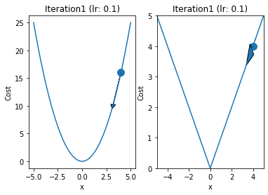
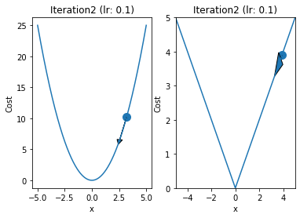
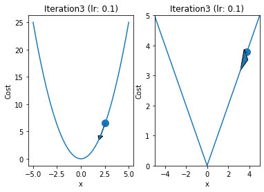
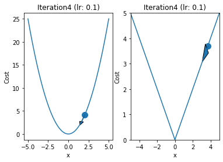
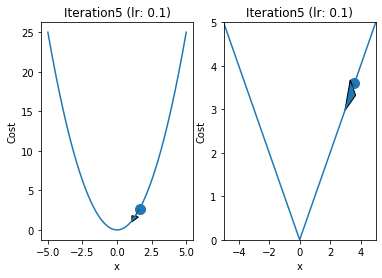
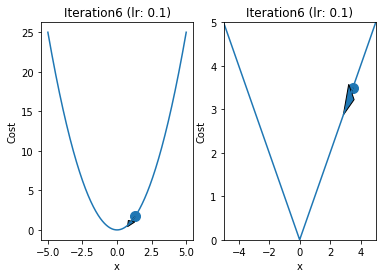
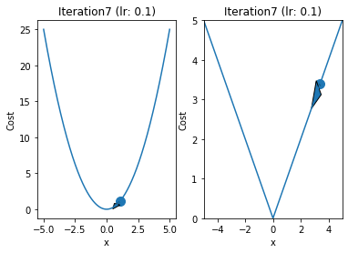
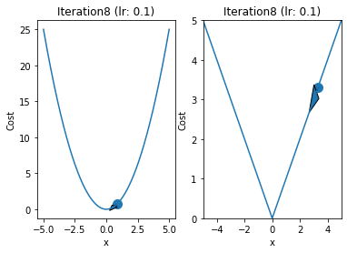
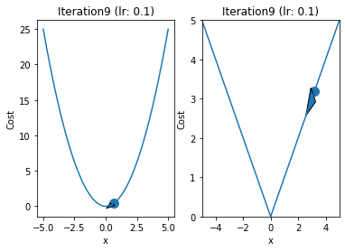
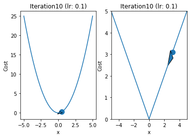
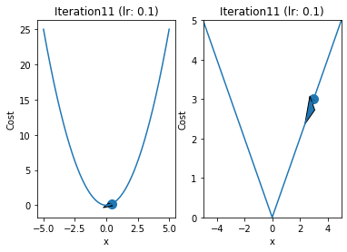

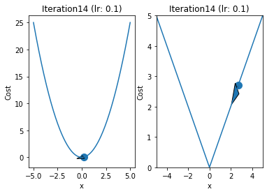
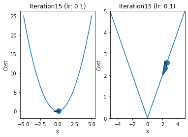
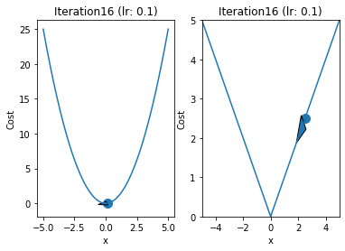

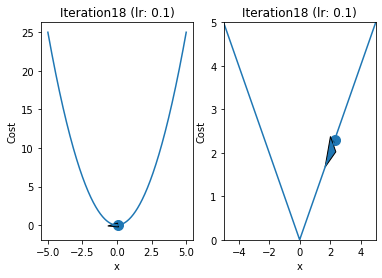
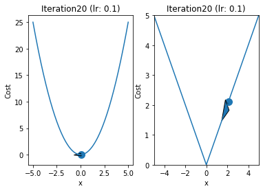
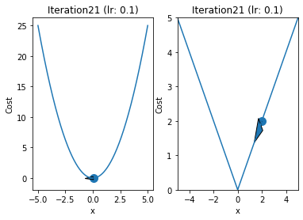
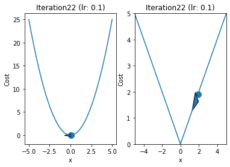
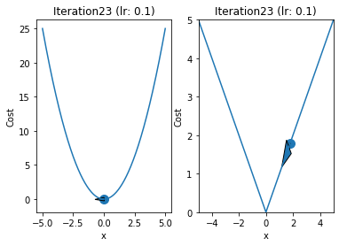
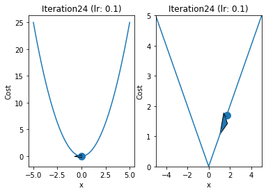
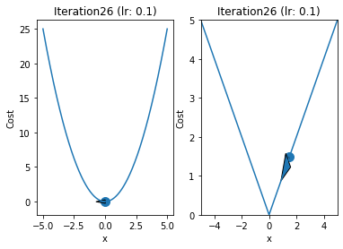
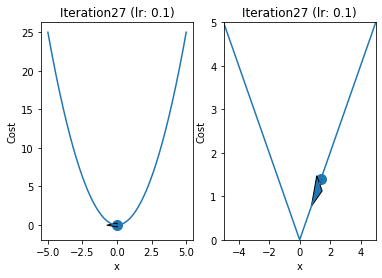
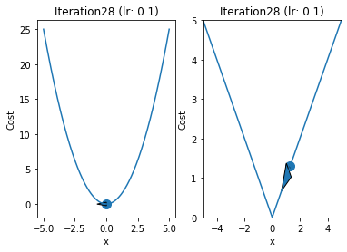
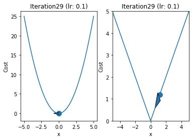
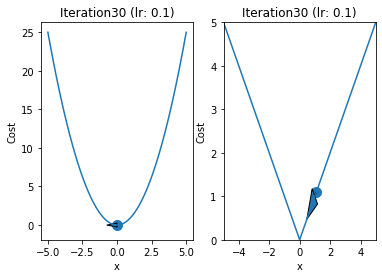
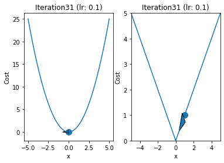
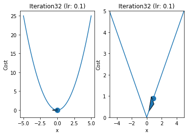
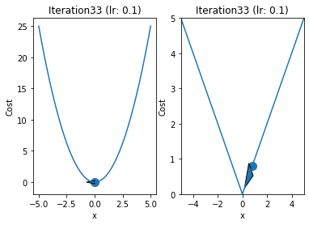
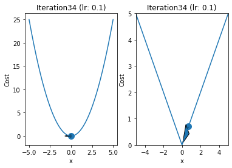
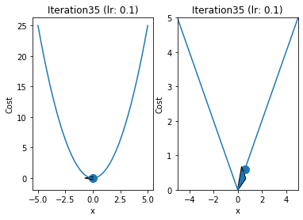
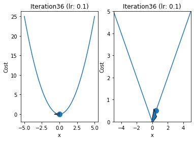
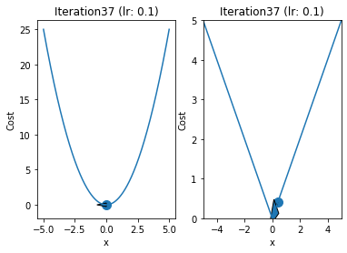
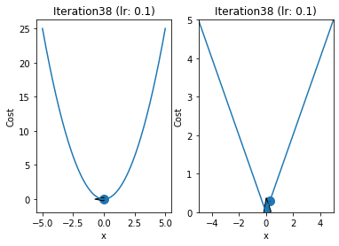
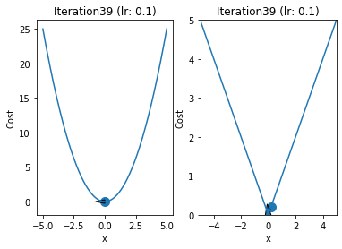
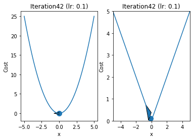
x1,y1= 5**0.5,5
y2,x2 = 5,5
x_shift = 0
y_shift = -0.5
iterations = 11
for i in range(iterations):
fig, ax = plt.subplots(nrows=1, ncols=2)
ax[0].set_ylim(-1,10)
ax[0].set_xlim(-5,5)
ax[1].set_xlim(-5,5)
ax[1].set_ylim(-1,10)
ax[0].plot(x,x**2, color = 'blue')
ax[1].plot(x,abs(x),color = 'red')
ax[0].scatter(x1,y1,color = 'black')
ax[0].annotate(str(round(y1,3)), (x1 + x_shift, y1+y_shift))
ax[1].annotate(str(y2), (x2 + x_shift, y2 + y_shift))
ax[1].scatter(x2,y2,color = 'black')
fig.suptitle('Iteration {}'.format(i))
if(iteratio)
plt.savefig('GD_Iteration_{}.pdf'.format(i))
y1 = y1 - alpha*y1
y2 = y2 - 0.5
x2 = y2
x1 = y1**0.5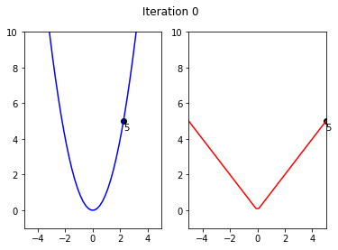
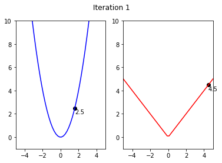
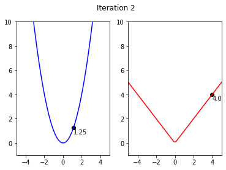
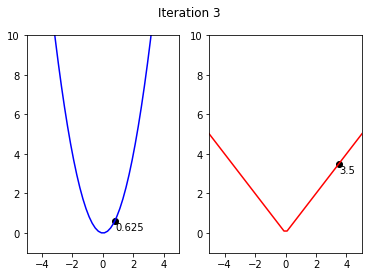
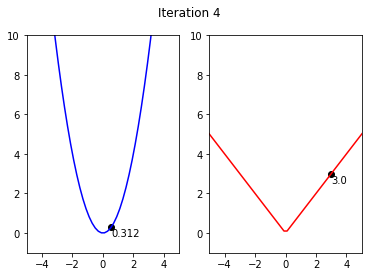
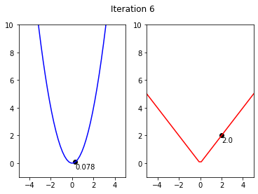
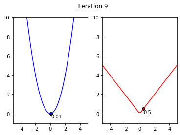

from sklearn.linear_model import Lasso
from matplotlib.patches import Rectangle
for alpha in np.linspace(1,2,5):
fig, ax = plt.subplots(nrows=1, ncols=2, figsize=(10, 5))
deg = 1
predictors = ['ones','x']
if deg >= 2:
predictors.extend(['x_%d'%i for i in range(2,deg+1)])
regressor = Lasso(alpha=alpha,normalize=True, fit_intercept=False)
regressor.fit(data[predictors],data['y'])
y_pred = regressor.predict(data[predictors])
# Plot
ax[0].scatter(data['x'],data['y'], label='Train')
ax[0].plot(data['x'], y_pred,'k', label='Prediction')
ax[0].plot(data['x'], y_true,'g.', label='True Function')
ax[0].legend()
ax[0].set_title(f"Degree: {deg} | $\mu$: {alpha} | Max Coef: {max(regressor.coef_, key=abs):.2f}")
# Circle
total = abs(regressor.coef_[0]) + abs(regressor.coef_[1])
p1 = Rectangle((-total, 0), np.sqrt(2)*total, np.sqrt(2)*total, angle = -45, alpha=0.6, color='g', label=r'$|\theta_0|+|\theta_1|={:.2f}$'.format(total))
ax[1].add_patch(p1)
# Contour
levels = np.sort(np.array([2,10,20,50,100,150,200,400,600,800,1000]))
ax[1].contourf(x_grid, y_grid, cost_matrix, levels,alpha=.7)
#ax[1].colorbar()
ax[1].axhline(0, color='black', alpha=.5, dashes=[2, 4],linewidth=1)
ax[1].axvline(0, color='black', alpha=0.5, dashes=[2, 4],linewidth=1)
CS = plt.contour(x_grid, y_grid, cost_matrix, levels, linewidths=1,colors='black')
ax[1].clabel(CS, inline=1, fontsize=8)
ax[1].set_title("Least squares objective function")
ax[1].set_xlabel(r"$\theta_0$")
ax[1].set_ylabel(r"$\theta_1$")
ax[1].scatter(regressor.coef_[0],regressor.coef_[1] ,marker='x', color='r',s=25,label='Lasso Solution')
ax[1].scatter([7], [4],marker='*', color='r',s=25,label='Actual Solution')
ax[1].set_xlim([-4,15])
ax[1].set_ylim([-4,15])
ax[1].legend()
plt.savefig('lasso_{}.pdf'.format(alpha), transparent=True, bbox_inches="tight")
plt.show()
plt.clf()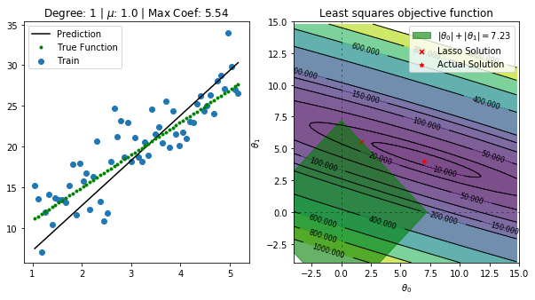
<Figure size 432x288 with 0 Axes><Figure size 432x288 with 0 Axes><Figure size 432x288 with 0 Axes><Figure size 432x288 with 0 Axes>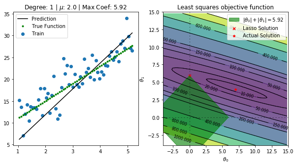
<Figure size 432x288 with 0 Axes>from sklearn.linear_model import Lasso
for i,deg in enumerate([19]):
predictors = ['ones', 'x']
if deg >= 2:
predictors.extend(['x_%d'%i for i in range(2,deg+1)])
for i,alpha in enumerate([1, 1e10]):
regressor = Lasso(alpha=alpha,normalize=False, fit_intercept=False)
regressor.fit(data[predictors],data['y'])
y_pred = regressor.predict(data[predictors])
plt.scatter(data['x'],data['y'], label='Train')
plt.plot(data['x'], y_pred,'k', label='Prediction')
plt.plot(data['x'], y_true,'g.', label='True Function')
plt.legend()
plt.title(f"Degree: {deg} | $\mu$: {alpha} | Max Coeff: {max(regressor.coef_, key=abs):.2f}")
plt.savefig('lasso_{}_{}.pdf'.format(alpha, deg), transparent=True, bbox_inches="tight")
plt.show()
plt.clf()/home/btech2/miniconda3/envs/latex_slides/lib/python3.6/site-packages/sklearn/linear_model/_coordinate_descent.py:476: ConvergenceWarning: Objective did not converge. You might want to increase the number of iterations. Duality gap: 659.2329891662157, tolerance: 2.566256097809531
positive)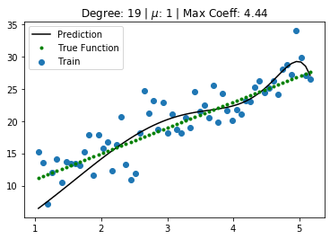
/home/btech2/miniconda3/envs/latex_slides/lib/python3.6/site-packages/sklearn/linear_model/_coordinate_descent.py:476: ConvergenceWarning: Objective did not converge. You might want to increase the number of iterations. Duality gap: 5017.444529811921, tolerance: 2.566256097809531
positive)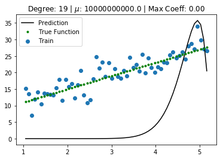
<Figure size 432x288 with 0 Axes>import pandas as pd
data = pd.read_excel("dataset.xlsx")
cols = data.columns
alph_list = np.logspace(-5,1,num=20, endpoint=False)
coef_list = []
for i,alpha in enumerate(alph_list):
regressor = Lasso(alpha=alpha,normalize=True)
regressor.fit(data[cols[1:-1]],data[cols[-1]])
coef_list.append(regressor.coef_)
coef_list = np.abs(np.array(coef_list).T)
for i in range(len(cols[1:-1])):
plt.loglog(alph_list, coef_list[i] , label=r"$\theta_{}$".format(i))
plt.xlabel('$\mu$ value')
plt.ylabel('Coefficient Value')
plt.legend()
plt.savefig('lasso_reg.pdf', transparent=True, bbox_inches="tight")